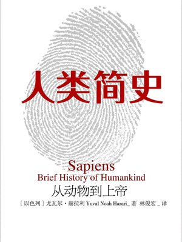

📖《人类简史》是以色列历史学家尤瓦尔·赫拉利的代表作，从认知革命、农业革命到科学革命，以宏大视角梳理了智人从东非一角走向全球的历程。
书中提出诸多颠覆性观点：认知革命让智人获得虚构故事的能力，从而超越其他物种；农业革命是"史上最大的骗局"，让人被农作物驯化；科学革命则让人类获得了前所未有的力量，却也带来新的危机。
这是我读过的最具颠覆性的历史书之一。赫拉利打破了传统历史叙事的框架，不从帝王将相的角度讲述历史，而是从物种演化的宏观视角审视人类文明的进程。
最让我震撼的是"认知革命"的概念——智人之所以能够战胜其他人类物种（如尼安德特人），不是因为我们更强壮或更聪明，而是因为我们获得了"虚构"的能力。国家、宗教、货币、公司，这些都不是客观存在的实体，而是人类共同相信的"故事"。正是这些虚构故事，让大规模协作成为可能。
农业革命是"史上最大的骗局"这个观点同样发人深省。我们习惯认为农业是人类文明的进步，但赫拉利指出，从个体角度看，农民的生活比狩猎采集者更辛苦、饮食更单一、疾病更多。农业革命的本质是让更多人以更糟的方式生存。这种反直觉的思考方式，贯穿全书。
这本书最大的价值在于帮助我们跳出人类中心主义的思维定势，重新审视自己。读完之后，对人类历史、对社会结构、对自己在这个世界的位置，都会有全新的认知。